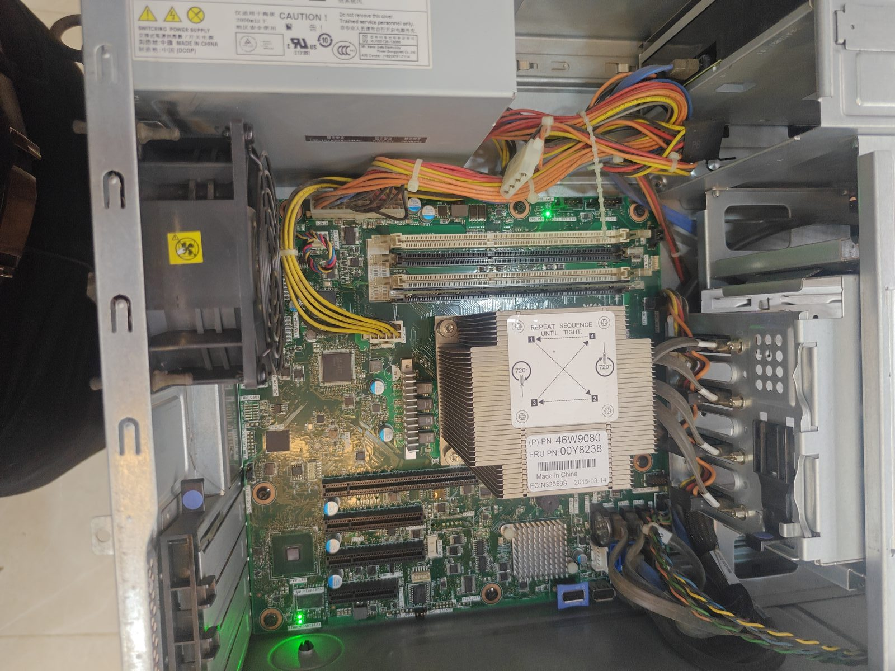

Used server hardware: what it is, and why it's not a study machine
Every few months a student asks me about a listing they've found: "Sir, 16 core Xeon, 32GB RAM, ₹12,000 only. Ye kaisa hai?" On paper it destroys any laptop on this site. In practice it's the wrong machine for almost everyone reading this — and understanding why teaches you more about computers than any spec sheet.
So let's open one up.

What you're looking at
Start with the obvious difference: two processor sockets. The finned metal block in the middle is a heatsink covering one Xeon. To its right, that bare square grid of pins is a second, empty socket. A server can run two physical processors at once. No desktop or laptop does this.
Next, eight memory slots in two banks. A normal desktop has two or four. Servers are built to hold enormous amounts of RAM — and specifically ECC RAM, which detects and corrects memory errors as they happen. Regular desktop RAM won't work in most of these boards, and server RAM won't work in your desktop. They are not interchangeable, no matter what the seller says.
Up top, those grey cables run to a hot-swap drive backplane — a board with connectors where drives slide in from the front of the case without opening it or powering down. That's a design goal you only care about if the machine must never stop running.
And that fan at the bottom, plus the ones you can't see: servers move a lot of air, loudly, because they're designed for a rack in a cold room where nobody sits.
Why the specs mislead
Here is the core misunderstanding. A Xeon from 2015 has many cores, but each individual core is slower than a core in a current i3. Almost everything a student does — loading a mock test, opening a PDF, rendering a webpage — happens on one core at a time. Sixteen slow cores lose to four fast ones for that work. The extra cores sit idle.
Servers win at problems you can split into many independent pieces running at once: hosting websites, running virtual machines, database queries, batch processing. That's not exam prep.
Then there's electricity. A machine like this pulls a few hundred watts continuously. Run it eight hours a day and, at Delhi tariffs, you're adding meaningfully to the monthly bill — enough over a year to have bought a better laptop.
Who should actually buy one
I'm not saying never. These are extraordinary value for the right person:
- Learning Linux, virtualization, or networking seriously. A cheap server lets you run ten virtual machines and break them without consequence. This is a real, common reason.
- Home lab / self-hosted storage. Those hot-swap bays and ECC memory exist precisely to keep data safe over years.
- Someone with a garage, a store room, or anywhere that isn't a bedroom. The noise is not a joke.
Note that none of these are "I need a computer to study on." If that's you, an i3 laptop with an SSD will serve you better in every way that you will actually feel. See the under ₹30,000 guide.
If you're buying one anyway, check these
- Are both CPUs present, or one? A second socket sitting empty is normal and fine — but the price should reflect one processor, not two. Sellers quote "dual Xeon capable" and mean the board, not the contents.
- Is the RAM ECC registered (RDIMM) or unbuffered? Boards are picky. Mismatched or partially populated banks cause boot failures that look like a dead machine.
- Does the RAID controller have a battery or flash module? A dead cache battery means the controller runs in a slower, safer mode. Cheap to replace, worth knowing.
- Power supplies: many have two for redundancy. Confirm both work; a single failed PSU is often why the machine got sold.
- Ask about the drive caddies. The trays that hold the drives are model-specific and are almost always missing. Buying them separately can cost more than the drives.
- Listen to it run before money changes hands. Then imagine that sound at 11 PM.
The real lesson
Specs are answers to questions. "How many cores?" is only useful once you know whether your work uses more than one at a time. "How much RAM?" matters until you have enough, then stops mattering. Server hardware looks like a bargain because it's optimised for a question you're not asking.
The same logic runs through every guide on this site. A gaming laptop's graphics card, a workstation's Xeon, a 16GB RAM upgrade — all of them are real capability that some people genuinely need. The skill worth building isn't knowing which spec is biggest. It's knowing which specs you can safely ignore.